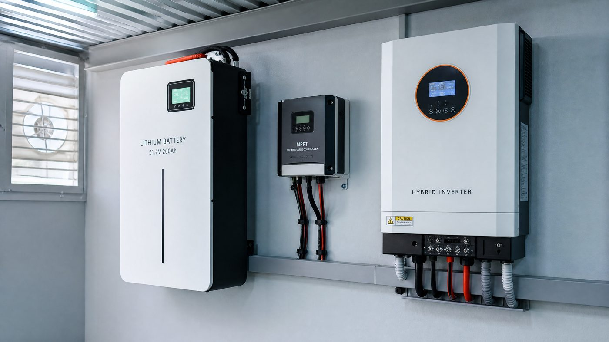

The brochure numbers on a battery are the least honest numbers in solar. A "200 Ah" lead-acid battery gives you 100 usable amp-hours at best; a "10 kWh" lithium pack with a conservative BMS gives you 8-8.5. Vendors sell nameplate capacity; your nights consume usable capacity. The entire design problem of a battery bank is closing the gap between those two numbers — and the gap widens with every hot season, every deep cycle, and every mismatched battery added to an old string.
This guide follows the design sequence a working engineer uses: define the load, pick the chemistry, size for usable depth of discharge, plan for heat and aging, then verify inverter and charge controller compatibility. Each step has one calculation and one field rule attached to it.
Step one: size from your real nights, not from the inverter
The most common battery mistake is "I have a 5 kW inverter, so I need a 5 kWh battery." Inverter size says nothing about runtime. What matters is your essential nightly load — the kWh you actually consume between sunset and sunrise when the panels are dark. Measure it honestly: list the fridge, lights, fans, TV, water pump runtime and any night-load devices, multiply each by its hours, and add them up. A typical small household runs 8-12 kWh of essentials per night; a desert homestead with a well pump and freezer can run 20-30 kWh.
Once you have the nightly number, divide by usable depth of discharge. The formula is the whole design in one line:
Bank size = nightly load (kWh) ÷ usable DoD + 15% aging margin
A 10 kWh nightly need on lithium at 80% usable DoD gives 12.5 kWh of bank; the same need on lead-acid at 50% usable DoD gives 20 kWh. That is why a lithium bank looks expensive on the sticker and cheap on the bill — you are buying usable kWh, not nameplate.
Chemistry: lithium, lead-acid, gel — the honest comparison
Lithium iron phosphate (LiFePO4) is the default for anything used daily: 80% usable depth, 3,000-6,000 cycles to 80% capacity, tolerance for partial-state cycling, and a BMS that prevents the fatal abuse modes. Street prices in 2026 ran roughly $150-250 per usable kWh. Lead-acid (AGM and flooded) gives 50% usable depth and 500-1,200 cycles, but enters at half the upfront price and works fine for seasonal or backup-only systems that rarely cycle. Gel sits between the two — sealed and maintenance-free like AGM, with slightly better deep-cycle tolerance but a real sensitivity to overcharging that cheap charge controllers ignore.
| Chemistry | Usable DoD | Cycles to 80% | 2026 $/usable kWh | Best use |
|---|---|---|---|---|
| LiFePO4 | 80% | 3,000 – 6,000 | 150 – 250 | Daily cycling, backup, off-grid |
| Lead-acid AGM | 50% | 500 – 1,200 | 80 – 140 | Backup-only, low budget |
| Gel | 50 – 60% | 700 – 1,500 | 100 – 170 | Remote cabins, solar street systems |
Heat: the silent killer nobody quotes
In hot climates the battery bank dies of temperature long before it dies of cycling. The rule of thumb for lead-acid is brutal and reliable: every 10 degrees C above the rated 25 degrees C roughly halves cycle life. A bank living at 35-40 degrees C in an uninsulated shed — the normal state of many desert installations — will last two to three years where the datasheet promises six. Lithium degrades more slowly with heat, roughly 20-30% faster aging per 10 degrees above rating, but a BMS will disconnect a hot pack in a heat wave and leave you in the dark at the exact moment you wanted it most.
The field fixes are all cheap: mount the bank on a shaded north-facing wall rather than in a west-facing shed; provide cross-ventilation or a small exhaust fan; keep the bank at least 10 cm off the floor and away from the inverter's own heat; and derate the capacity by 15-20% when sizing so the aged bank still meets the nightly load in year five. In Ma'an and Mafraq installations the difference between a bank that survives four summers and one that survives ten is the enclosure, not the brand.
The BMS: the difference between a bank and a bomb
A battery management system measures every cell's voltage and temperature and disconnects the pack on overcharge, deep discharge, overcurrent, and over-temperature. Without one, a lithium bank is just a collection of cells waiting for a mismatch to escalate — one weak cell pushed past 4.2 V or below 2.5 V fails, and the series string around it fails with it. When choosing a lithium bank, check three things: that the BMS is active and per-cell balanced (not just total-pack protection), that it communicates with your inverter or charger so the system throttles before the BMS is forced to cut, and that the BMS current rating exceeds your inverter's maximum draw with margin — a 100 A BMS on a 5 kW inverter will trip during surge loads.
Inverter and charger compatibility
The bank does not exist in isolation — it must be matched to the equipment that charges and drains it. A lead-acid bank needs a charge controller with the correct absorption and float voltages; a lithium bank needs either a controller with a lithium profile for its exact model or CAN/RS485 communication so the BMS sets the parameters. On the discharge side, the inverter's low-voltage cutoff must sit above the battery's BMS cutoff — otherwise the battery and the inverter fight over who gets to decide the system is empty, and the result is nuisance tripping. If you are designing around a hybrid inverter, confirm its battery port supports your chemistry and voltage (48 V for most residential lithium), because a port locked to a single vendor's battery turns a component choice into an ecosystem lock-in.
Reading a battery quote: five checks before signing
Four questions turn any battery quote transparent. One: is this price per nameplate kWh or per usable kWh — divide the quote by nameplate capacity times usable DoD and compare that number across vendors. Two: what is the warranty cycle count and at what depth — a "10 year" warranty that assumes 0.7 cycles per day at 80% DoD is not the same as one assuming daily full cycling. Three: what happens at 40 degrees C — does the datasheet derate, and does the warranty survive a hot installation? Four: is the BMS communicating or standalone — communication avoids most tripping problems. Five: what does replacement labor cost in year three — a bank whose warranty requires return-to-factory shipping is a five-figure labor risk wearing a two-year sticker.
Common battery bank questions, answered
"Can I add batteries to an existing bank later?" Only in parallel strings of the same age, chemistry and capacity, matched in voltage before connection. Never add to a series string, and never mix old and new — the new battery does the old one's work and dies young.
"Why does my bank show full but run out quickly?" Voltage is not capacity. A sulfated lead-acid bank reads full at float but delivers a fraction of its rated Ah; a hot lithium pack with an unbalanced string does the same. The honest diagnostic is a controlled discharge test with a known load, not the meter.
"Do I need a battery for a grid-tied system?" Only if your export rate is low (net billing), your grid is unreliable, or your tariff makes night power expensive (time-of-use). Under true 1:1 net metering, the grid itself is your battery and adding storage usually hurts the payback.
"How long will my battery actually last?" Count cycles, not years. A LiFePO4 bank cycled once daily to 80% DoD at 25 degrees C gives 3,000-6,000 cycles — ten to fifteen years. The same bank at 40 degrees C doing two cycles a day gives three to five. The environment writes the warranty, not the vendor.
Frequently asked questions
How big should my battery bank be?
Start from your usable nightly consumption, not the inverter size. Take your essential night load in kWh and divide by the usable depth of discharge: a 10 kWh night need on lithium (80% DoD usable) needs a 12.5 kWh bank; the same need on lead-acid (50% DoD) needs 20 kWh. Add 15-20% for aging in hot climates, and you have your real number.
Lithium or lead-acid — which is worth the extra money?
Lithium (LiFePO4) costs roughly twice as much per kWh upfront but gives 4-6 times the cycle life, 80% usable depth versus 50%, and holds up far better in partial-state cycling. Over a ten-year horizon lithium almost always wins on cost per usable kWh — the exception is very low-budget seasonal systems where lead-acid's low entry price and tolerance for simple charge controllers still makes sense.
Does heat really shorten battery life that much?
Yes — it is the number one silent killer in desert installations. Every 10 degrees C above the rated 25 degrees C roughly halves lead-acid life and degrades lithium around 20-30% faster. A bank stored at 35 degrees C year-round can lose a third of its rated life. In hot climates the fix is cheap: shade the enclosure, ventilate it, bury or mount in the coolest available wall, and derate the capacity by 15-20% when sizing.
What does a BMS actually protect against?
A battery management system watches each cell's voltage and temperature and disconnects the pack on overcharge, deep discharge, overcurrent and over-temperature. Without it, one weak cell can be pushed into failure by the series string around it. Every lithium bank needs an active BMS; on large banks check that the BMS communicates with your inverter or charger so the inverter throttles before the BMS is forced to cut hard.
Can I mix old and new batteries in the same bank?
No — it is the fastest way to kill a battery bank. In a series string, the weakest cell defines the whole pack's usable capacity, and a new battery sitting beside an aged one gets chronically overworked. Replace banks as a complete set. The one exception: parallel strings of the same age, chemistry and capacity can be added if the voltages are matched before connection.
Why does my battery read full but run out fast?
Three common causes: the bank was never fully charged (lead-acid sulfation builds up when it lives at partial state, and the meter tells you voltage, not capacity); the capacity was undersized so you are running deeper cycles than rated; or — very common in hot climates — one string aged faster and drags the whole bank down. A controlled capacity test with a known load is the honest diagnostic.